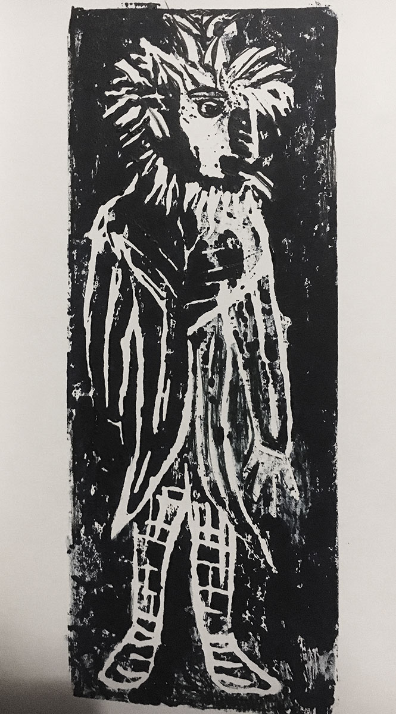
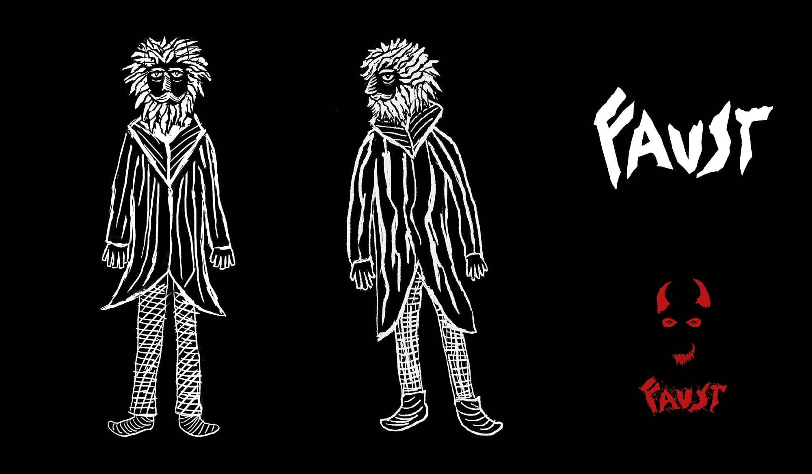
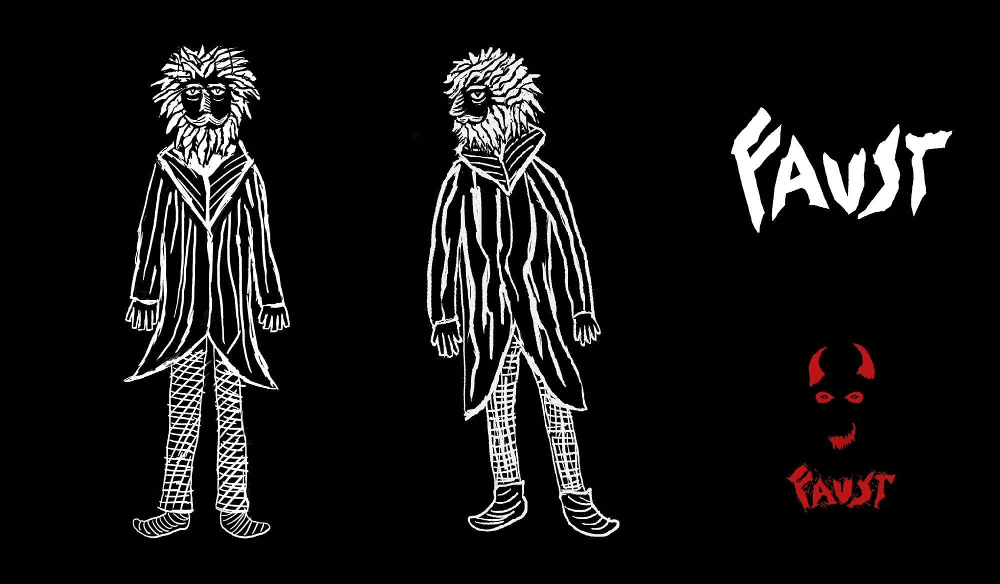
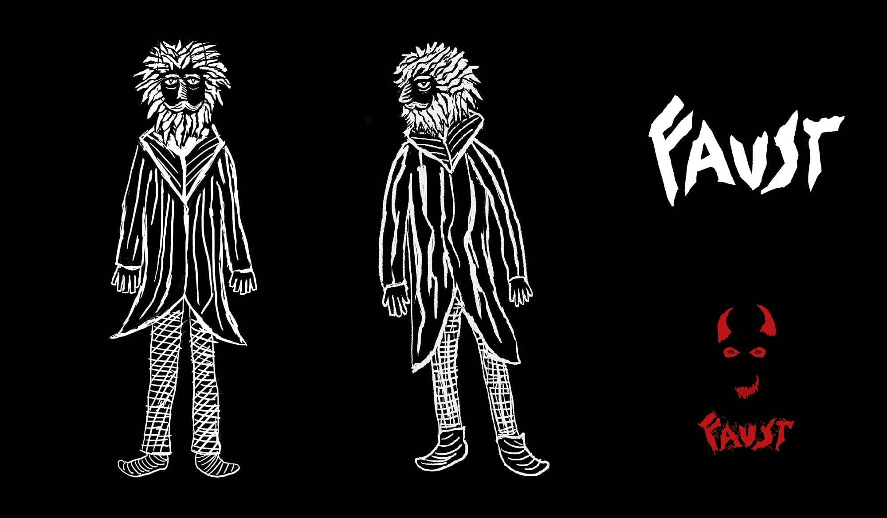

 


An animated poster for a Faust opera adaptation.
While theoretical, the poster was created with an opera play by Opera Ballet Vlaanderen in mind. This adaptation is a modern take on the classic story, so I decided to reflect this in the design.
To create the illustration I made use of linocut printmaking. Faust is a story in a medieval setting, so a style that resembled an old woodblock print felt appropriate.
I combined this traditional technique with modern video effects for a raw emotional feeling, that fits the nature of the tale and the style of the modern play.